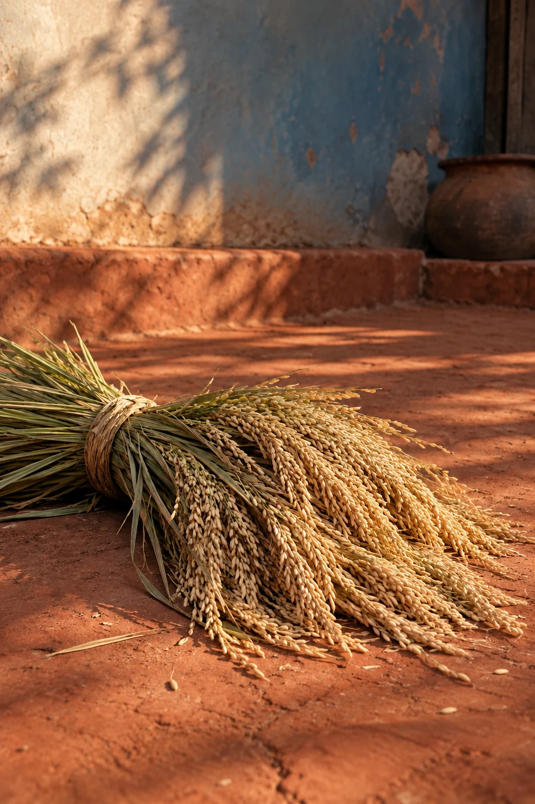

ସେମାନେ କହୁଥିବା ଏକ ନଷ୍ଟ ସ୍ଵର୍ଗର ଫଟୋଚିତ୍ର
 Original: Odia
Original: Odia
 Kabita Live
Kabita LiveThe sheaf is small enough to hold and large enough to contain months. Rain, waiting, bent backs and uncertain skies have arrived together in these stems. The field will soon look different. For a moment, the harvest can be seen as a gathering of time, not simply a gathering of grain.
Rice harvest and agricultural labour; gratitude does not erase the work or uncertainty that produced it.
Language
Text size
Choose a language for the titles and the poems you open.
Original: Odia Original: Odia
Original: Odia Original: English
Original: English Original: English
Original: English Original: English
Original: English Original: English
Original: English